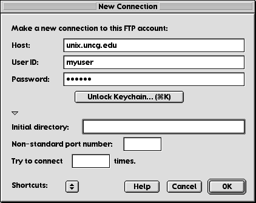
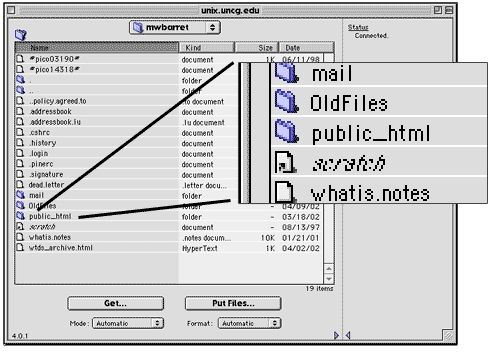

We looked at Fetch way back in week 5. So this should be a review.
Launch Fetch from the "Internet Apps" folder on the Apple menu.
Choose "Open Connection" from the "File" menu.
(It should open automatically.)
Enter the following:
Your Fetch window will look slightly different from the example below.

Click "OK"
You should see a window with a list of all files and folders in your unix account.
Double-click on the "public_html" folder.

You should see the contents of your "public_html" folder in the Fetch window.
Move the Fetch window over, so you can easily see your ZIP disk on the desktop.
Open your ZIP to the "public_html" folder you've been working with.
Click and drag the contents of your "public_html" folder into the Fetch window.
Fetch will upload your files to the server.
Go to http://www.uncg.edu/~username (where "username" is your unix username) and look at your site.
You will want to burn your web portfolios to a CD-R when you are finished. This way, you can add more to it later.
The address you enter above is your web address for the duration of your stay at UNCG.
Once you have graduated from UNCG, you can get free web hosting (if you don't mind ruthless pop up ads) from companies like Geocities or Angelfire. If you have an ISP (Earthlink, RoadRunner) you often have free web hosting space included with your service.